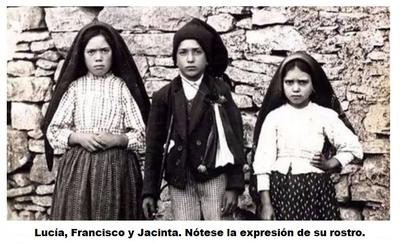

Este 13 de mayo de 2026 se cumplen 109 años de uno de los episodios más difundidos por la Iglesia católica en el siglo XX: las llamadas apariciones de Fátima. Un relato que, presentado como «milagro», logró conmocionar a la Europa de su tiempo y que, con el paso de los años, fue elevado a símbolo global de devoción. Sin embargo, visto con distancia crítica, lo que emerge no es un fenómeno sobrenatural, sino una historia cargada de inconsistencias, intereses institucionales y una notable ausencia de evidencia verificable.


Según la versión oficial, tres niños pastores portugueses —Lucía dos Santos, y sus primos Francisco Marto y Jacinta Marto— afirmaron haber visto a la «Virgen María» en 1917, en un paraje rural conocido como Cova da Iria, en Fátima. La primera supuesta aparición habría ocurrido el 13 de mayo, repitiéndose en varias ocasiones hasta octubre de ese mismo año.
Sin embargo, desde el inicio los relatos mostraron inconsistencias. En un principio, los niños hablaron de una vaga «presencia». Posteriormente, Lucía describió a una figura femenina «más brillante que el sol», mientras que Francisco admitió no haber escuchado nada, limitándose a verla. Pero estas discrepancias no impidieron que el relato evolucionara hacia una narrativa más elaborada, incluyendo los famosos «tres secretos», cuya difusión quedó bajo el control exclusivo de la jerarquía eclesiástica.
El contexto tampoco es irrelevante. Portugal atravesaba una etapa de profundas transformaciones tras la instauración de la república en 1910, con políticas de secularización que afectaban directamente los privilegios históricos de la Iglesia. Y en ese escenario, un fenómeno religioso de gran impacto popular no sólo reforzaba la fe, sino que también contribuía a restaurar la influencia social y económica del clero.
A esto se suma un dato curioso: el nombre «Fátima» no tiene un origen cristiano, sino islámico, en referencia a Fátima az-Zahra, hija del profeta Mahoma. La región había sido ocupada por musulmanes siglos atrás, lo que añade un matiz histórico poco mencionado en la narrativa oficial.
Pero el episodio más espectacular habría ocurrido el 13 de octubre de 1917: el llamado «milagro del sol». Según ciertos testimonios divulgados posteriormente, miles de personas habrían visto al sol «bailar» en el cielo. Un fenómeno que, a la luz de nuestros conocimientos actuales, plantea problemas evidentes. Para empezar, un movimiento irregular aparente del sol observado desde la Tierra, sería más bien un movimiento anómalo de nuestro planeta, porque no es el sol que se mueve alrededor de la Tierra, sino a la inversa. Y cualquier alteración irregular o repentina en los movimientos reales de la Tierra, desencadenaría un cataclismo global inmediato debido a las leyes de la física (inercia destructiva, tsunamis globales, vientos supersónicos, colapso de la biosfera y clima extremo). Obviamente, un evento de esta magnitud garantizaría la extinción inmediata de la especie humana y de casi toda la vida en el planeta.
Pero, ¿acaso le interesa el conocimiento científico al pensamiento dogmático? ¿Acaso le interesa a los manipuladores de masas? La ignorancia en estos temas era generalizada todavía en la Europa de principios del siglo XX. E incluso uno de los relatos más citados es el del periodista portugués Avelino de Almeida (1873-1932), del diario «O Século» (El Siglo), quien se atrevió a escribir:
«Ante los ojos deslumbrados de aquellas gentes, cuya actitud nos trasplantaba a los tiempos bíblicos y que, pálidos de asombro, con la cabeza descubierta, contemplaban el azul del cielo, el sol vibró; el sol hizo movimientos bruscos nunca vistos, contra todas las leyes cósmicas; «el sol bailó», según la típica expresión de los campesinos.»[1]
Sin embargo, análisis posteriores señalan que las crónicas fueron ambiguas, y que las fotografías tomadas ese día no muestran ningún fenómeno extraordinario. Más bien, apuntan a un día lluvioso y normal, a pesar de que Almeida escribió que se veía «el sol, libre de nubes, en el cénit.»[1]… Estamos hablando de cuando no existían transmisiones en vivo ni celulares que grabaran el evento, y la información se recibía días después de haber ocurrido, según la descripción de un inspirado periodista. Así, aquel «milagro del sol» quedó entre la sugestión y el relato mediático de un solo periodista.
En tal sentido, el filósofo estadounidense John Hospers (1918-2011) planteó una objeción difícil de ignorar: si una divinidad quisiera demostrar su existencia mediante milagros, ¿por qué elegir un espectáculo local y ambiguo, en lugar de intervenir en tragedias globales como la Primera Guerra Mundial, que estaba en pleno desarrollo?
Por otra parte, los llamados «secretos de Fátima» fueron revelados de manera fragmentaria y tardía. Los dos primeros se hicieron públicos en 1941, mientras que el tercero permaneció oculto hasta el año 2000, cuando fue divulgado por Juan Pablo II. Sin embargo, su contenido no destaca por su carácter sobrenatural, sino por su utilidad simbólica: visiones del infierno que apelan al miedo, interpretaciones retrospectivas de conflictos bélicos, y relatos vagos susceptibles de múltiples lecturas. Al final, la interpretación oficial estuvo a cargo de Benedicto XVI, reforzando el control institucional sobre el significado del fenómeno.
En este contexto, el propio atentado contra Juan Pablo II en 1981, fue reinterpretado dentro de esta narrativa. El papa atribuyó su supervivencia a la Virgen de Fátima, lo que generó críticas como las del biólogo británico Richard Dawkins (n. en 1941), quien cuestionó por qué esa supuesta intervención mejor no evitó el atentado.
Pero de todo esto, un aspecto particularmente inquietante es el destino de aquellos niños campesinos. Críticos como el sacerdote y periodista portugués Mário de Oliveira (1937-2022), han denunciado que los niños fueron sometidos a una intensa presión psicológica, basada en el miedo al infierno y en prácticas de penitencia extremas. En abril de 1999, publicó el libro «Fátima nunca mais» (Fátima nunca más), en el que intenta disipar el mito, y presenta evidencia que refuta las apariciones de Fátima. Afirma Oliveira que la utilización de Jacinta Marto, Francisco Marto y Lúcia de Jesus dos Santos en las supuestas apariciones de Fátima en 1917, arruinó la vida de los tres niños. También acusa al clero de Ourém y a la Iglesia Católica, de haber abusado psicológicamente de los tres niños, hasta el punto de que dos de ellos, Francisco y Jacinta, fallecieron de neumonía, porque fueron debilitados por el ayuno religioso, y que la única sobreviviente, Lucía, fue enclaustrada en un convento bajo estricta supervisión religiosa[2]. Y desde esta perspectiva, más que protagonistas de un milagro, habrían sido víctimas de un entorno profundamente coercitivo.
No obstante lo anterior, en 2017, durante el centenario de las supuesta apariciones, el papa Francisco canonizó a Jacinta y Francisco, consolidando oficialmente la narrativa. Y es que ¿cómo renunciar a una farsa tan lucrativa y conveniente para la Iglesia? —Más allá del plano religioso, Fátima se convirtió en un importante centro de peregrinación. Millones de personas visitan cada año el santuario, generando un impacto económico significativo en turismo, comercio y servicios. Hoteles, restaurantes, agencias de viaje y la venta de objetos religiosos forman parte de una industria sostenida por la devoción.
Hoy, a más de un siglo de distancia, el caso de Fátima ilustra cómo se construyen y perpetúan los relatos milagrosos. Lejos de constituir evidencia de lo sobrenatural, estos episodios parecen surgir de una combinación de contexto histórico, sugestión colectiva, control institucional y necesidad humana de creer.
Pero el problema no es sólo la credulidad, sino las consecuencias: cuando el pensamiento crítico se suspende, las narrativas —por más frágiles que sean— pueden transformarse en dogmas capaces de influir en millones de personas durante generaciones.
[Godless Freeman]
Comentarios
Comments powered by Disqus